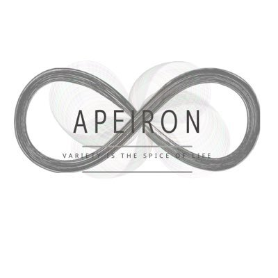

APEIRON
SHADOWVERSE AMATEUR TEAM
RAGE JCS 2026 Season2 準優勝
NEWS お知らせ
RECRUITMENT
OPEN
公募を開始いたしました。
詳細は下記の公式Xのポストをご確認ください。

SHADOWVERSE AMATEUR TEAM
RAGE JCS 2026 Season2 準優勝
公募を開始いたしました。
詳細は下記の公式Xのポストをご確認ください。